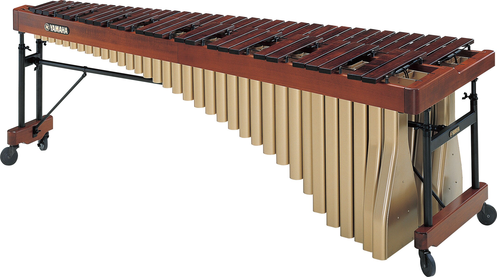

Marimba

The marimba is a percussion instrument with wooden bars and tuned resonators, known for its warm, rich and mellow sound. Its wide range and expressive tone make it a favourite in orchestras, concert bands, chamber music and solo performances.
Types of Marimbas
Concert Marimba
A full-size professional instrument, usually with a five-octave range and rosewood bars. It produces a deep, resonant tone and is used in concert halls and solo recitals.
- Price range: from $8,000 to $30,000+
Student Marimba
A smaller instrument, often with a range of around four octaves, made for school programs and developing players. It offers a warm tone at a more affordable price.
- Price range: from $2,000 to $8,000
Portable Marimba
A lightweight marimba with a folding or compact frame, designed for easy transport. It is useful for teachers, travelling players and small performance spaces.
- Price range: from $500 to $3,500
Synthetic Bar Marimba
A marimba with bars made from durable synthetic material instead of wood. It stays in tune well, handles changes in weather and is ideal for outdoor performances and marching bands.
- Price range: from $1,500 to $7,000
Popular Brands
- Yamaha
- Marimba One
- Adams
- Musser
- Pearl